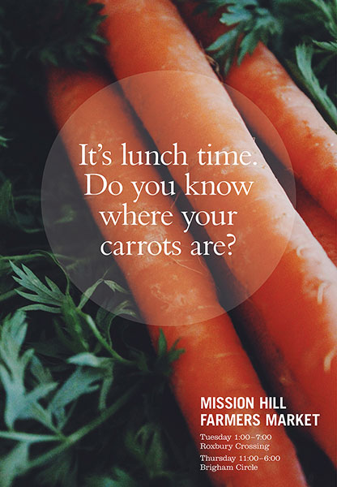
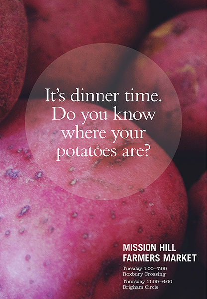
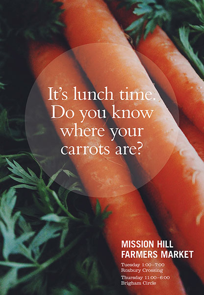
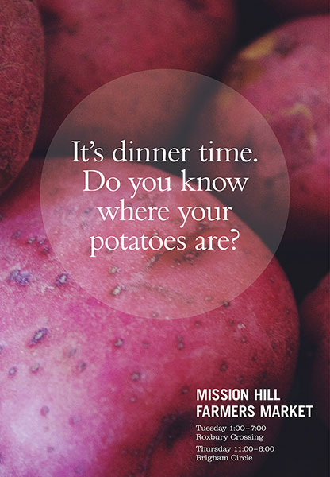

Posters for the Mission Hill Farmers Market, promoting healthy eating and posing a reminder to parents to feed their children fruits and vegetables. Concept based off of news broadcasting commercial "It's 10 PM do you know where your children are?"

 


